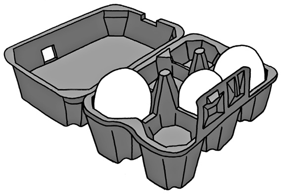
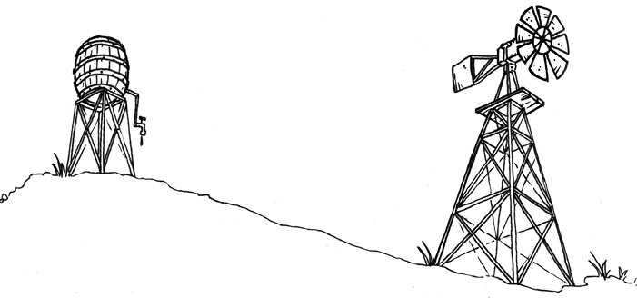
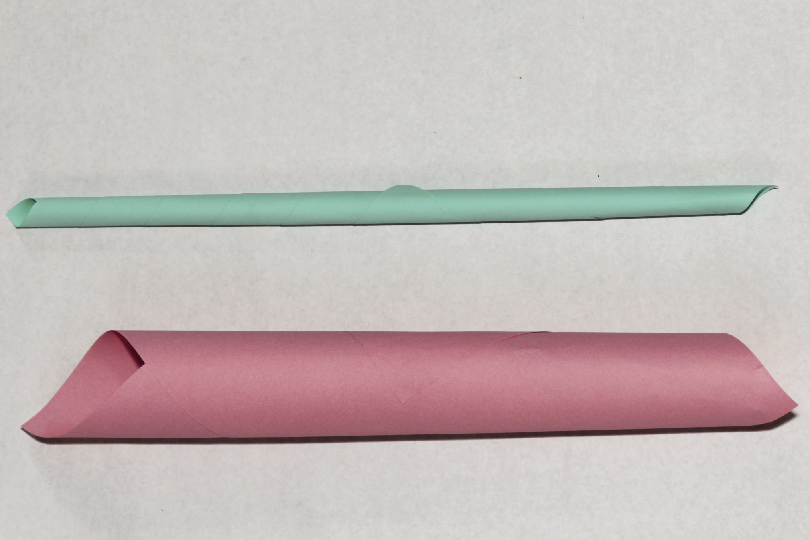
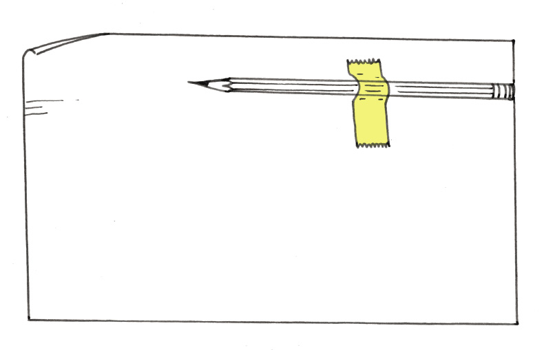

Right now, you are sitting at a desk on a chair. Soon, you will write things in a book with a pen or a pencil. The book rests on your desk. All these objects are called structures. If you look around the classroom, you will see many other structures. For example, the classroom and the school buildings are structures.
In this chapter, you will learn about natural and man-made structures. You will also learn about shell structures, solid structures and frame structures.
8.1 Things called structures 114
8.2 Man-made and natural structures 119
8.3 Types of structures 123
Figure 1: Is a piece of dough or wet clay a structure?


8.1 Things called structures
Look around you in the classroom. Choose any object, for example a cupboard, a table, a chair, a basket, a bottle, a shoe, a pencil case or a brick. Then answer the following questions about this object.
1. What is this object called?
2. What is it used for?
3. Can it be used to keep certain things in one place, so that they do not lie around all over the classroom?
4. Can it be used to protect something, for example to protect it from sunlight or wind?
5. Is it used to support something?
Figure 4: The chair supports the person sitting on it.
This man is sitting comfortably on the chair. You can say that the chair supports the man and keeps him from falling off.
6. Describe two other objects that are different from chairs, but are also used to support something or someone.

Figure 5: The bridge spans the stream.
A bridge that crosses a stream or a river from one end to the other helps people to cross it without getting wet. You can say that the bridge spans the stream.

A small business situation
Suppose you want to set up a stall at a market to sell food such as sugar, flour, maize, rice, eggs, beans and cooking oil. So you buy one large bag each of sugar, flour, maize and rice, and a 20-litre drum of cooking oil.
Figure 6
1. Make a list of the things you can see in this picture.
2. What else do you need to set up your stall before you can sell the goods?
3. What type of container will the eggs you sell come in?
Figure 7
4. Why are eggs packed in special containers such as the one you see in this picture?
5. If you wanted to make a table from the two empty crates, what else would you need?
6. Suppose a woman wants to buy 2 kg of flour from you. Will you ask her to hold out her hands so that you can put the flour in her hands, or will you make another plan?
7. What will you use as containers when you sell maize, rice, sugar and flour to people?
A container is something that you use to keep things together in one place, like a paper bag for rice.
8. What will you use as a container to sell oil?
9. What did you decide to use to span the two crates to form a table, when you answered question 5 above?
The table you will make, the crates that you use to make the table, the containers in which you get the eggs and the plastic bottles in which you sell the oil are all called structures.
There are many other things that are also called structures.
10. How will you protect yourself and the goods you sell when it rains? Draw the structure that you will use for protection.
People design and make structures for different reasons. Many structures can help you to do one or more of the things below.
- •
11. Can you think of a structure that can do more than one of these things?

8.2 Man-made and natural structures
Figure 8: A termite mound
Have you ever looked closely at a termite mound? It really is wonderful how it contains and protects termites and their food against the weather and against their enemies. There is a whole city in there!
The material (soil) is reworked by them to make it harder so that it can withstand shocks, while its shape allows rain to flow off it easily. It is an example of a natural structure and it is not man-made.
Man-made shelters have the same functions – to protect people and their belongings. Before man-made shelters such as houses and tents existed, people used caves or trees for protection.
There are lots of different structures around us. Some are built by us and some are already there in nature. The termite mound is a structure, but it is not built by people. We call structures like that natural structures.
A cup that you use to drink tea or coffee is also a structure. It is a man-made structure because it was made by people.
Look at the structures on the next two pages, then classify them as man-made structures or natural structures.

(c)
(a)
(e)
(f)
d)
(b)
(c)
(a)
(e)
(b)
(d)
(f)
Classify structures
1. Classify the 12 structures on the previous two pages as man-made or as natural structures.
|
Man-made structures |
Natural structures |
2. What other natural structures can you think of?
3. Name any three man-made structures that provide protection.
4. Name any three man-made structures that provide support.
5. Name any three man-made structures that contain things.

8.3 Types of structures
There are three basic types of structures: shell structures, frame structures and solid structures. But some structures are a combination.
Shell structures
Most containers used to hold liquids or small solids are shell structures. Examples are coffee mugs, bowls for peanuts and bags for rice or sugar.
The strength of a shell structure is on its outside – in the shell.
Chicken eggs and empty ostrich eggs are examples of natural shell structures. Soccer balls or balloons are man-made shell structures.
Figure 11: Ostrich eggs were used as water containers by the San people.
Figure 12: Bees store their honey in honeycombs.

Figure 13: Arubber tyre is a shell structure.

Figure 14: A coffee mug is a shell structure.
Frame structures
A frame structure consists of different parts. These parts are combined in such a way to make the structure strong. A ladder and a bicycle are good examples of man-made frame structures. Spiderwebs are natural frame structures.
Figure 15: This roof frame is a frame structure made from wooden planks, a natural material. The planks support the roof.

Figure 16: A bicycle frame consists of different metal pipes.

Figure 17: A plant leaf. Look at its veins. They form the frame of the leaf.

Solid structures
Structures like rocks, bricks and cement poles are solid. They do not consist of different parts with open spaces between them. A stone is a natural solid structure and is one piece of material. A brick is a man-made solid structure.

Figure 18: Stones

Figure 19: Table Mountain
Figure 20: A cement brick
Figure 21: A teaspoon
Combined structures
A house is a good example of a structure that is a combination of shell, frame and solid structures.
- • The bricks, roof tiles or roof sheets are all solid structures.
- • The different rooms of the house is a shell structure.
- • The framework on which the roof tiles or sheets rest are called roof trusses, and are frame structures.
Identify types of structures
1. Classify the following structures in the table below as shell, frame or solid structures:
a house; electricity pylon; tortoise shell; cellphone tower; human skull; brick; garden chair; spiderweb and dog kennel; wooden logs; chicken eggs and rocks. You can look at pictures of these structures on the previous pages.
2. Write more examples of each of the different kinds of structures in the table.
|
Shell structures |
Frame structures |
Solid structures |

Support for water tanks
Figure 22: A water tank on a solid brick stand
Figure 23: A water tank on a metal-frame stand

1. Name all the structures that you can see in the pictures above. In each case, say what kind of structure it is, and what its purpose is.
2 Compare the support structures for the two water tanks.
(a) Which stand is a solid structure and which stand is a frame structure?
(b) Which stand do you think is stronger of the two? Explain why you think so.
3. Make a free-hand sketch of the metal frame stand and the tank here:

Next week
In the next chapter, you will learn about different ways to make frame structures stronger.
In this chapter, you will look at frame structures such as cellphone towers, windmills, pylons and mine headgear. You will learn how these structures are designed and built so that they are strong enough, and you will find out how the materials used in building these structures can be made stronger. You will also investigate the advantages and disadvantages of landline phones and mobile phones, or cellphones.
9.1 Strong frame structures 132
9.2 Communication systems 137
9.3 Action research: strengthening structures 139

Figure 1
Figure 2
Figure
3 
9.1 Strong frame structures
Figure 4: Cellphone tower
Figure 5: A windmill
When the wind blows so that the wheel of a windmill turns, water is pumped from a borehole in the ground. In this way, wind is used as a source of energy. In the same way, wind can also be used to generate electricity. Many years ago, before electricity was discovered, windmills were used to grind grain to make flour.
A cellphone tower is a tall frame structure with devices called wave receivers and transmitters at the top. When two people talk to each other with cellphones, the receivers and transmitters in a cellphone tower lets the waves from one cellphone reach the other cellphone.
Figure 6
1. Draw lines on the diagram on the left so that it looks more like the tower of a windmill or a cellphone. Do not use a ruler. Just make a quick free-hand sketch.
 Figure 7
Figure 7
2. Why do you think windmill and cellphone towers are designed as in your drawing?
Examine more towers
Figure 8: Electricity pylons

Figure 9: Mine headgear

Figure 11
1. Look at the pictures and photographs that have been shown in this chapter so far. They all show frame towers. Do these towers look more like design A or more like design B below?
design A
design B
Figure 12
2. Draw dark lines on the sides of a triangle in design A. Are there any triangles in design B? How many triangles are there in design A?
3. Why do you think there are triangles in the towers?

9.2 Communication systems
Landlines or cellphones: which is better?
Some people say it is better to use mobile phones than landlines. Others prefer landlines to cellphones.
A mobile phone is another name for a cellphone.
Figure 13
1. Why can Mavis not hear what Thomas is saying?
2. Phillip and Lebogang enjoy their conversation. Why are they not experiencing the same communication problem as Mavis and Thomas?
3. Describe four advantages and four disadvantages of using landline phones, and of using cellphones, in the table below.
|
Device |
Advantages |
Disadvantages |
|
Landline phones |
|
|
|
Cellphones |
|
|
9.3 Action research: Strengthening structures
Some materials are not suitable as building materials. But their properties can be changed and improved to make it suitable. You will now stiffen a flat sheet of paper to make it suitable as building material for models.
Stiffen: To make something rigid and strong.
Activity 1: Stiffen paper by tubing
Work in pairs.
You need:
- • two sheets of A4 paper (preferably waste paper intended for recycling),
- • masking tape or cellotape,
- • glue, and
- • a pair of scissors.
Look at the pictures below before you start.

Figure 14
Partner 1: Roll a sheet of paper to form a tube with a centre hole that is not bigger than the centre hole of a toilet paper roll. Fasten the tube with tape to keep its shape.
Partner 2: Roll a sheet of paper into a tight tube with a centre hole, so that a pencil can almost not fit in. Fasten the tube with tape to keep its shape.
Hold the tubes at their ends. Try to bend each one. Which one bends the easiest?
Tubing is also used to make strong paper straws. Look at the illustration below to see how to roll paper straws.
Glue down the last piece of the sheet of paper to prevent the straw from unrolling.
Cut off the thin ends of the rolled straw.Now you have a strong paper straw.
Home-made glue
Ingredients
1 cup flour
½ cup sugar
1 ½ cups water
1 big spoon vinegar
Method
Mix the flour with sugar in a pot.
Add ½ of the water. Stir.
Add the rest of the water and stir.
Add the vinegar.
Heat until the mixture gets thick and shiny.
Leave to cool.
step 1
step 3
step 2
step 4
Figure 15

Activity 2: Stiffen cardboard by folding
Work in pairs. You need some cardboard, sticky tape and a pair of scissors. You also need two books. Cut two strips of cardboard, each about 30 cm long and8 cm wide. Fold one strip along its length, in the middle, so that it looks like this:

Figure 16
1. Which of the two pieces of cardboard will bend easier?
Investigate to check your answer.
One person holds the flat strip of cardboard across two books as shown below. The other person presses down in the middle of the sheet of paper.
 Figure 17
Figure 17
Do the same with the folded strip.
 Figure 18
Figure 18
2. Which strip is the easiest to bend: the flat strip or the folded strip?

Activity 3: How to make shapes stable and strong
Work in groups of four.
Materials:
- • a few sheets of A4 scrap paper,
- • glue,
- • thin wire or string, and
- • a nail or awl to make holes with.
1. Each group should roll at least five paper straws.
2. Join four paper straws to make a four-sided shape. Look what happens when you push the sides of the square or pull the sides of the square. Does the shape change?
 Figure 19
Figure 19
3. Insert another paper straw from the top left corner to the bottom right corner. Repeat the pushing and pulling actions. Does the shape change easily again?
Figure
20
By turning the square into two triangles, you made the structure stable.
- •
4 Look at the shapes below. Decide as a group how you could make them stable.
(a) Build the two shapes and test your ideas. One pair makes shape A and the other pair makes shape B.
(b) Push and pull the sides of the shapes before you add extra paper tubes.
(c) Test your shapes once you have added the extra paper tubes. Are they both stable?

A
B
Figure 21
5. Copy the two shapes. Now fill in where you would add extra paper straws to create triangle shapes.
6. How many paper struts did you use to turn shape A into triangles?
7. How many paper struts did you use to turn shape B into triangles?
8. Share your drawings with three other learners. Take a good look at where they placed the diagonal members to make their shapes stable.

|
Use triangulation to make paper strong |
1. The drawing below is of one side of a bridge. It is not finished yet. Complete the drawing to show how triangulation will be used.

Figure 22
2. Below are drawings of two different frames.
(a) Make each of them using paper or thin card. Make sure that you use the same materials for both frames.
(b) When they are finished, press lightly on each of them with one hand. You will feel that they can withstand a little pressure from above.
The square frame is strong when you press straight down on it. It is weak when you press down on it from the side.
The triangular frame can take pressure from the side as well.
(c) Use the same material you used for the frames. Glue a piece on the bottom and the top of each frame. This will make the frame firmer.
(d) Now test the strength of each of the frames. Place the same book first on the one and then on the other frame. Start with a fairly light book. If the frame does not break, add another book.
(e) How many books could each of the frames take before it collapsed?
(f) Which frame collapsed first?
(g) Explain why the other frame was firmer.
Figure 23
Next week
In the next chapter, you will learn about different things to keep in mind when you plan to build something.
In this chapter, you will learn about design issues. Design issues are things to think of when something like a cellphone tower, bridge, building or power station is designed. They include the purposes of the object or structure, the cost, and how people and the environment will be affected.
10.1 Why do cellphone towers look like they do? 147
10.2 Things tower designers think about 150
10.3 Give clear instructions 151
Figure 1
tower D
tower A
tower B
tower E
tower C

tower F
Figure 2
10.1 Why do cellphone towers look like they do?
Examine a few cellphone towers
On the previous page you can see pictures of different cellphone towers.
1. Why do you think tower A was designed to look like a tree?
2. Why does tower C have cables, but tower D has no cables?
3. Why will tower A not topple over and fall, even when the wind is strong?
4. Why does tower D have a large concrete block at the bottom, but tower E hasno foundation?
- •
5. Which of the towers on the previous page has the widest base? Why was it designed to have such a wide base?
6. Which of the towers do you think is most unstable? Why do you think so?

Centre of gravity
Fasten your pencil with sticky tape to a sheet of paper, as shown below. The back end of your pencil must be at the edge of the paper as shown.
Figure 3
Now roll the paper around the pencil to form a long tube with the pencil inside. Tape the tube on the outside, where the back of the pencil is, so that it can't open up.
1. Try to make the tube stand upright on one end. Try this at both ends. What do you notice?
- •
2. What is more stable: an object with a low centre ofgravity or an object with a high centre of gravity?
3. Which tower on page 146 has the highest centre of gravity?
Figure 4

The following are different ways to prevent towers from falling over easily:
- •
- • Make the centre of gravity low. One way of doing this is to connect the tower to a heavy object at its bottom.
- • Fasten the tower to the ground with cables.
- • Plant the tower deep in the ground.
- • Give the tower a wide base.
4. Look at the sketches of the six towers again. For each tower, say which method or combination of methods was used to make it stable.
5. Strong foundations help to keep towers from falling over. Which towers have foundations under ground level to keep them stable?
6. How do the underground foundations differ from each other?
7. Some of the towers are built from solid concrete or fibre glass. Other towers are metal structures. Why do you think the metal towers have triangles in them?

10.2 Things tower designers think about
What questions will you ask?
Suppose a new cellphone tower will be built in an area with no cellphone coverage. The mayor of the local municipality in that area invites you to visit him, and says:
"I want someone to write a document about the new cellphone tower. The document will be given to the engineers who will design and build the cellphone tower. When they read it, it must be clear what we want. Can you write that document?"
He then says:
"You will need more information before you can write the document. To find that information, you have to ask questions. Which questions will you ask me and other people in the community?"
Write down questions that you think will help you to find the information you need.

10.3 Give clear instructions
Write a design brief and specifications for school desks
Suppose you are given the responsibility of ordering 100 new classroom desks for the school. The desks will be made at a furniture factory. This is the first time that school desks will be made at this factory. The people at the factory have no experience of making school desks, so you have to give them very clear instructions.
You will soon write a document for the factory manager, so that he can know what the school desks should look like, how big and strong they should be, and what materials they should be made of. Before you do that, examine your own desk in class to help you make decisions about the new school desks. The new desks do not have to be exactly the same as your desk. You can suggest desks that are different from yours.
1. Now examine your desk and think about how you want the new desks to be made. Write notes in the space below, and make a few free-hand sketches too.
A document such as the one you will now write is called a design brief and the answers to your questions are called specifications.
2. Write the document that will be sent to the factory manager on a loose sheet of paper. Your document should include one or more drawings. State the dimensions of the school desk.
3. Make a 3D oblique drawing in the space below of the desk you want to be made.


Evaluate and improve your document
Read your design brief and specifications for school desks again, and then answer the following questions:
1. Does your document say if the legs of the desk should be made of wood, metal or plastic?
Instead of evaluating your own document, you can evaluate someone else's document. Your teacher could arrange this.
2. Does your document say how wide the desk top should be?
3. Does your document say how high above the ground the desk top should be?
4. Does your document say how smooth or rough the surface of the desk top should be?
Try to think of other specifications that the factory manager might need, that is not given in your document.
5. Rewrite your design brief with specifications in the space below and on the following page. Include a single vanishing point perspective drawing.
Write one more design brief and specification
In the space below, write a design brief and a specification for an FM radio or a cellphone. Use the drawings on the next page to help you.

Figure 5
Next week
In the weeks to come, you will design and build a model cellphone tower.
This chapter is a formal assessment task. It will count for 70% of your term work.
Over the next six weeks you will design and build a model of a cellphone tower. You will work through the different stages of the design process to do this. Some of the work will be done in a group, and you will do some work on your own. Only the work done on your own will be assessed by your teacher.
Week 1
Make a few decisions . 160
Week 2
Compare and evaluate designs 169
Week 3
List resources and make a working drawing 173
Week 4
Build the model 179
Week 5
Finish building 180
Week 6
Plan your presentation 186
Assessment
Investigate:
Design brief, specifications and constraints [15]
Design:
Improve your design [7]
Plan to make [10]
Make:
Building your model [22]
2D working drawing [16]
[Total marks: 70]
A triangular roof is better, because then there is space to store things …
Lerato
I thought the house should have a triangular roof, because then there will be space to sto…
My house has a "stoep" in front of it.
Working as a team is not easy …
Why?
Jessica
NO! that's too complicated.I have a better idea.
Oh, that is a very good idea!
Their houses are way too fancy.
So that in summer there will be shade on the sunny side of the house, and we can sit outside in the shade to eat or do other things.
Wait, let me first finish explaining my idea.
Lerato discusses her idea while the others listen. When she's done, it's Jessica's turn.
They draw much better than me!
Solly
Figure 1
Soon, they're designing a lovely house together.
Solly, you haven't said anything yet. Why did you design an "L" shaped house?
I like that idea a lot!
Where I live, the wind never blows much, but now I understand Solly's reason for designing his house in an "L" shape. Let's do it like that!
At my family's house, the wind often blows into the house when you open the front door.
So I designed a house where the front door will be sheltered from the wind by the "L" shape.
Wow! working in a team can be fun and very rewarding!
Figure 2
Week 1
Make a few decisions (30 minutes)
Your village is about to get cellphone coverage. A cellphone company is planning to build a tower on a hill next to your school. Once the tower is built, the people in your village will be able to use cellphones. For example, they will be able to phone the doctor, clinic or chemist when they get sick. Everyone is very excited and they can't wait to phone their family members who live far away!
Some people are worried that the tower will look ugly. They think that it will not look nice next to the school, that it won't fit in with the surroundings. They would prefer a tower that does not look like a tower.
road
town hall with flat roof
the hill on the other side of town
sports field
Figure 3
1. Read the story above the picture at the top of the page again, then look at the pictures of six different cellphone towers in Chapter 10. Which of those towers will make the people in your village happy?
2. The cellphone company sends one of their employees to the village. He talks to the people in the village to find out what the designer should keep in mind when she makes plans for the tower. So he asks you:
"What are the three most important things I have to keep in mind when I design the cellphone tower for your village?"
You can start to answer by saying: "The tower must be . . ."
You can also start parts of your answer by saying: "The tower must not . . ."
Write down your answer below. You can mention more than three things if you want.
By writing your answers to the question, you have started to write a design brief and specifications for a cellphone tower.
3. Look at the picture of the village on the previous page. Where do you think the cellphone tower should be placed? Also decide what type of tower it should be, and make a rough drawing of the tower on the right place in the picture.

The cellphone company is looking for ideas for towers they can build. They have asked for your help. Your task is to design and build a model of a cellphone tower.
- • Your model should be more than 30 cm tall.
- • It should have a flat platform near the top of the tower. In a real tower, technicians will stand on this platform when they install or fix the transmitters and receivers at the top of the tower. The platform on your model should not be larger than a 10 cm by 10 cm square.
- • The model should fit in with the surroundings. It must be camouflaged in some way.
- • The model should be made from strong materials so that it will be stable.
- • It should also be rigid and hold its shape.
- • Your model should be reinforced using triangulation.
- • You can use any suitable building materials for your structure, such as materials that can be found around your home. Examples are stiff reeds; thin, straight sticks; or hand-rolled paper dowels.
Think about your task, and make a rough sketch below of what you think the tower should look like. Also make notes so that you will be able to remember later what you were thinking today.
Design brief, specifications and constraints (30 minutes)
Read through the situation and the information on the previous three pages before completing the three sets of questions below.
Have another look at Chapter 7 to refresh your memory about what the terms design brief, specifications and constraints mean.
1. Write the design brief.
(a) What is the problem?[1]
(b) Who will be happy about the new tower?[1]
(c) How will it help them?[1]
(d) Now write the design brief. Use the answers of the questions you have just answered. Start your paragraph with:
I must design and make …[2]
2. Identify the specifications.
(a) How should the tower be designed so that it will not look ugly?[1]
(b) What should be at the top of the tower?[1]
(c) Write down another specification, in your own words.[1]
(d) Write down another specification, in your own words.[1]
(e) Write down one more specification, in your own words.[1]
3. Identify the constraints.
(a) At least how tall should your model be?[1]
(b) How much weight should your model be able to carry?[1]
(c) You can only use materials that you can find around where you live.What are these materials?[3]
[Total:15]

Plan for camouflage and strength (60 minutes)
There are towers almost everywhere. Some support electricity or telephone cables, and keep water tanks off the ground; while others, like church towers, show us what the building is used for.
Many people think towers are ugly. So some towers are covered with plants or things that look like plants. This is called camouflage.
Camouflage means to cover or colour something to make it look similar to, and fit in with, the things around it.

Figure 4: Some insects camouflage themselves very well

Figure 5: An animal that camouflages itself well
Start to think about the model tower that you will build. Answer the questions below and also make a rough sketch with notes on the next page, so that people can understand your answers.
1. How will you camouflage your tower?
Towers are designed so that they are stable, strong and rigid.
- •
- • Something is stable if it does not fall over or collapse easily. The opposite of stable is unstable.
- • Something is strong if it does not break easily. The opposite of strong is weak.
- • Something is rigid if it does not bend easily. The opposite of rigid is flexible.
2. How will you make sure that your model cellphone tower is stable?
3. How will you make sure that your model cellphone tower is strong?
4. How will you make sure that your model cellphone tower is rigid?
Make your sketch here:
Some of the people in the village may not like your design. It would be a good idea to give them a choice. Think about possibilities for a different design and make a drawing with notes below to show your new design. It should be completely different from your first design.

Week 2
Compare and evaluate designs (30 minutes)
Join two or three other learners (not more than two or three). Show both of your designs to each other.
Look at the designs of other learners and ask questions about any part of their drawing that you do not understand.
Make suggestions to other learners about how they could improve their designs.
Make notes of what other learners say about your designs so that you can remember it when you try to improve your design later.
Write the notes in the space below.

Improve your design (30 minutes)
Decide which of your two designs is the best.
Look at your notes to remember what your classmates said about it. Now think about ways to improve your design.
Ask yourself the following questions to help you see how you can improve your design:
- •
Can you think of other questions that would help you to improve your design?
Also think back to what you have learnt in Chapters 8, 9 and 10 about:
- • how frame structures are reinforced to make them stronger and stop them from bending,
- • how frame structures are prevented from toppling,
- • the important features you identified when you investigated towers.
- • the need to avoid visual pollution.
Make a list of your planned improvements below. You can also make a sketch

Learn to make strong joints (60 minutes)
When a structure breaks, it is called structural failure. There are three main reasons why structures fail:
- • When the design is poor. If you make a bucket with a hole in the bottom, it will not hold water. The water will run out through the hole. The structure cannot work as it should, and it cannot do the work it was designed for.
- • When the wrong materials were used. The materials used for a structure must be strong enough for the load the structure has to carry. A child's chair will break when an adult sits on it, because the materials were not made to carry such a heavy load.
- • When the workmanship is poor. When the handle for the pan you fry your food in is not firmly fixed, it will break off. Poor quality workmanship can lead to your hand getting burnt.
You will now practise making strong joints to help you build the model cellphone tower.
Work in a group of three.
You will need:
- • handmade paper straws,
- • glue (you can make your own – use the recipeon the right),
- • wire,
- • a thin card,
- • sticky tape or masking tape, and
- • a nail or an awl.
Home-made glue
1 cup flour
3
cup of sugar
1 ½ cups of water
1 big spoon vinegar
Mix the flour with sugar in a pot.
Add half of the water. Stir.
Add the rest of the water and stir.
Add the vinegar.
Heat the mixture until it gets thick and shiny.
Leave the mixture to cool.
Look at the sketches on the next page.
- • Partner 1 makes joints A, B and E.
- • Partner 2 joins straws, as shown in C and D.
- • Partner 3 joins three straws with a paper "gusset", as shown in F.
Leave the joints overnight or longer, until they are completely dry.
You will come back to these joints later.

Work carefully with hot things, a stove or open flames.
Use a thick cloth or pot holder to prevent burning yourself or others.
If you get burnt, hold the
burnt area in cold water for20 minutes.
Do not rub anything on the burn.
A. Joining two straws by pushing one straw into the other one

B. Joining two straws by pasting with glue

C. Using wire to make a joint

D. Using a card gusset to strengthen a joint
Use tools safely
Use tools for the purpose they are made for. Scissors are made for cutting – not for anything else.
It is also important to use tools correctly. If you have not used a tool before, ask someone who knows how to work with it for advice. Keep tools in good working order and pack them away after you have used them.

E. Making and using triangular card gussets to strengthen a joint

F. Making, cutting and pasting three-dimensional card joints
Figure 6

Week 3
List resources and make a working drawing (30 minutes)
Work on your own.
1. You have already made a design for a cellphone tower. Look at it again. Make a list of everything you will need to build the model.
The tools and materials that are needed to build something are called resources.
2. Make a working drawing of your model on the next page. Your drawing should show what the model will look like from one side. Use a ruler and show dimensions. The drawing should be half as big as the model will be. Label your drawing to show the different parts. Show what the parts and the joints are made of.
Make your working drawing here, a 2D single view.

Form a team and choose a design (30 minutes)
Work in a team of three. Decide what role each team member should play.
Discuss each of your designs. Decide which design you think is best.
- • You should choose a design that the team can make. Choose the best design or make up a new design that uses ideas from every team member.
- • It is important to draw the design well.
- • Everyone should understand exactly what the team will make before you can move on to the next step.
- • Remember that your design must include a platform on which workers can stand when they work at the top of the tower.
- • Someone in the team has to sketch the new idea on a clean sheet of paper. It can be a rough sketch. It should show the materials that will be used and how the joints will be strengthened.
- • Make your own drawings of some joints in the space below. Also make a copy of the drawing of the whole tower on the next page.
Make the drawing here:

Plan to make (30 minutes)
Before any practical task is started, a lot of thinking, planning and preparation happens. We call this process of thinking and gathering tools and materials before the start "planning to make".
By now you have decided what your model tower will look like. It is time to start planning how you will build it.
Work on your own now. This work will be assessed by your teacher.
1. Make a list of all the materials you plan to use to build your model. (2)
2 Make a list of the tools you will use to build the model. Even a nail to make holes with can be called a tool. (2)
3 Think of your safety when using tools. Some tools can be dangerous if they are used incorrectly. Write down one safety rule for one of the tools you will be using. (2)
4 Think about the order of work. This is a list of all the steps you follow when you make the model. Below is the first step. Add a few more steps. (4)
Step 1. Roll straws from scrap paper.
Step 2.
Step 3.
Total [10]

Week 4
Build the model
It is important that you finish building the model in the given task. Make sure you understand exactly how much time you have for each step.
If you don't finish in time, you will have to stop when the time is up and start with the next tasks, even if your model is not finished yet.
Remember to work safely and neatly.
Also remember to give each person a task or a part of the model to make. You can help each other, or two people can work together. Each person must work equally hard at building the model.
Pack away your model and its parts at the end of each lesson.
Keep the pieces together in a plastic bag or paper bag. Write your names on the bag. This will prevent your pieces from getting mixed up with someone else's.
Sometimes, a design does not work out. You can make changes and add things to your model while you are building it.
Do not waste time. It often takes longer to make a project than you might expect.
First build the tower without the platform.
You have this period and the next two periods to do that.
Have another look at the joints you made earlier. Ask yourself:
- • Which joints will I make?
- • Which joints worked the best?
- • Which one is best for our model?
- • Which materials will we use for the joints?
Decide how your tower will be anchored.
- • Are you going to make a frame structure for a base?
- • Are you going to use a foundation? What will you use, a piece of cardboard or polystyrene?
- • Ask yourself if the tower will topple over, and if it will be able to carry the weight of two A5 textbooks.
Week 5
Finish building (30 minutes)
You have this period and the next one to finish your tower.
- • Make sure that the tower stands upright and does not fall over.
- • Build the platform and anchor it to the top of the model tower.
- • Test if your tower can carry the weight of two A5 text books.
- • Camouflage your model. Don't forget that your tower must fit in with the surroundings.
When you have finished, take a good look at your model.
Your teacher will evaluate your model. [Total: 40]
Are you unhappy with some parts of the tower? Make a list of the things that could make it better. Use the space below.
Make a 2D working drawing (60 minutes)
Work on your own. Each learner has to make their own drawing.
Make a 2D working drawing of the front view of your model tower.
Your teacher will assess your drawing.
If you have forgotten how to do working drawings, go back to the work you did in Chapter 2 to remind yourself. You can also look at the working drawing of a water tank stand on the next page.
Your teacher will assess the following aspects of your drawing, so look at the list below to make sure that you have included everything.
|
Criteria for working drawings |
Tick |
|
The drawing has a heading. |
|
|
The heading includes the view that the drawing is drawn in, which is the front view. |
|
|
The outline of the drawing is darker than the dimension lines. |
|
|
The dimensions have only been written down once. |
|
|
The dimensions (measurements) are written in millimetres. You don't have to write mm, because designers always use millimetres on working drawings. |
|
|
All measurements are placed in the centre of the dimension line. |
|
|
Arrowheads are neatly drawn on either end of your dimension lines. |
|
|
The drawing is neat. |
Total [20]
Figure 7
Make your own working drawing of the model cellphone tower on this page.

Prepare to evaluate (30 minutes)
Next week, you have to evaluate the designs of the other teams, and the towers they have built.
To do that, you will develop an evaluation sheet. You will use the evaluation sheet to judge your own tower and the towers made by two other teams.
In week 1 of the mini-PAT, you were given the information that you used for your specifications. Now use this information as your evaluation criteria.
Criteria are ideas you use to judge something.
1. Change each of the criteria into a question you will ask, and write the question in the evaluation sheet below. Work as a team.
- • Your model should be no less that 300 mm (30 cm) tall.
- • It should have a flat platform on the top. In a real tower, such a platform is used by engineers when they need to work on the top part of the tower. You will use two A5 textbooks to test if your tower is strong enough to hold the radio transmitters and receivers.
- • The model should fit in with the surroundings. It should be camouflaged in some way.
- • The model should be made from strong materials to keep it stable.
- • It should also be rigid and hold its shape.
- • Your model should show reinforcement through triangulation.
|
Criteria |
Good 3 |
Medium 2 |
Poor 1 |
2. Work on your own. Use the evaluation sheet on the previous page to evaluate the tower you and your teammates have built.
3. Join your teammates and compare your evaluations. Discuss it and try to agree on a final evaluation.
4. Write your questions into the following two evaluation sheets. You will use these sheets to evaluate towers built by other teams.
|
CriteriaModel of team A |
Good 3 |
Medium 2 |
Poor 1 |
|
CriteriaModel of team B |
Good 3 |
Medium 2 |
Poor 1 |
Week 6
Plan your presentation (60 minutes)
Each team should prepare a presentation of their plans and model to the rest of the class. The presentation should be at least three minutes long, but not longer than five minutes.
1. Plan your presentation.
- • All the team members have to talk aboutthe work they did when they built the tower.
- • One learner has to show and explain thedesign sketch. Tell the group how you plannedto make the tower fit in with the surroundings.
- • One learner should talk about the problemsthe group experienced.
- • One learner should talk about how thegroup tested the tower.
- • Decide who will start and who will talk next.
2. Use the space below to write notes about what you will do.
Hints for presenting
Stand up straight and look at the class when you speak.
Do not read your presentation.
Speak clearly, so that everyone can hear you.
Know when it is your turn to speak.
Keep to the time limit.
3. Practise your presentation. Then give your presentation during the last period of the week.

Enjoy your winter holiday! After the holiday, you will make things that work with electricity and magnets.